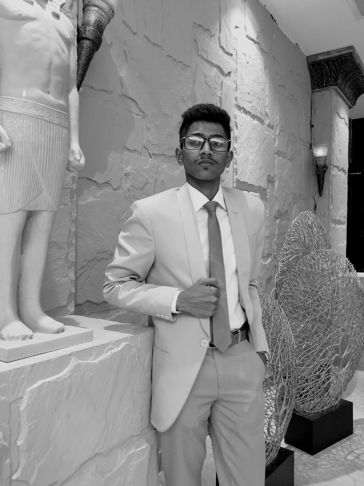

Who am I
I am currently pursuing a Bachelor of Science Honors in Information Technology (BSc.IT) at BCI Campus. My goal is to excel in Software Engineering,driven by consistent effort, strategic planning,and a constant desire for knowledge. I possess strong multitasking abilities, allowing me to balance my academic endeavors with active participation in youth activities, which has helped me refine my leadership and interpersonal skills. My strengths lie in my sense of responsibility, unyielding determination, and a passion for continuous learning, all of which contribute to my career growth.